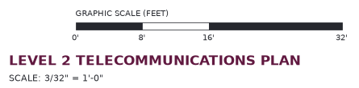

UCI 1019 · AI-Enhanced Low Voltage Fiber Technician · Introduction to Enterprise Infrastructure
Lesson 530.1 — Telecommunications Spaces and Construction Drawings
Where the cabling of a building lives, and how to read the drawings that tell you where to put it.
Kestrel Communications has the telecommunications contract for the Harlow Street Operations Center, a two-storey building at 2200 Harlow Street. The general contractor, Ridgeway Builders, has issued the drawing set marked Issued for Construction, Revision 1. Before a crew pulls the first cable, a Kestrel technician reads that set. It says which room on Level 2 the cables start from and which room below feeds that one. It also states what the owner requires of each room and gives the distances the technician works out each cable length from.
The lesson first covers the building’s telecommunications spaces: the rooms where cabling enters the building, where it is cross-connected, and where it ends at a desk, with the requirements an owner sets for the room that serves each floor. It then covers the drawing set: how its sheets are organized; its plan, elevation, section and detail views; its symbols, notes and scale; and the riser diagram and schedules that carry what a floor plan cannot show.
The worked examples on this page use a second, hypothetical building, the Mercer Avenue Clinic. The Harlow Street drawings use the same conventions.
How the lesson is organized
- The Spaces and the Cabling Between Them. The telecommunications spaces, the order in which cabling passes through them, and what an owner requires of a telecommunications room.
- Reading a Construction Drawing Set. The sheet index and title block, the plan, elevation, section and detail views, the callouts that link them, and the symbols, legends and notes.
- Scale, Runs and Schedules. Reading a distance from a scaled drawing, adding up the length of a cable run, and reading a riser diagram and a panel schedule.
- Wrapping Up. The whole lesson in one place.
A note on the standards and the documents
ANSI/TIA-568, from the American National Standards Institute (ANSI) and the Telecommunications Industry Association (TIA), covers the cabling itself, including the length limits of a horizontal cable, and TIA-569 covers the pathways and spaces the cabling occupies. An owner usually writes its own standard on top of them. A contractor builds to the owner standard. The owner standard’s values may be stricter than the published standards. Where this page gives a value for a room, it is an owner standard’s value. The project you work on will have its own.
Drawing conventions vary between design firms. Sheet prefixes, symbols and note styles on this page are common practice, not a rule; the legend and notes of each set govern that set.
How this page works
Work through the topics in order using the Next button, or jump about using the Curriculum tab in the sidebar. Some topics contain an activity you need to complete before Next unlocks — a knowledge check, a set of cards to open, a matching exercise or an ordering exercise. Getting a knowledge check wrong never blocks you: the answer is shown and you can try again. Your progress through the lesson is shown in the header and in the contents list.
Working without a mouse, or with a screen reader
Everything here is operable from the keyboard. Tab moves between controls and Enter or Space activates them; the arrow keys move between the sidebar tabs. In the matching and ordering activities every item is a button, and your selections are announced as you make them. Right and wrong answers are always labeled in words as well as by color. Each diagram carries a full text description, each drawing excerpt has a text alternative, and tables have headings and captions that read correctly aloud.
Lesson 530.1 · Section 1 The Spaces and the Cabling Between Them
530.1.1 Where the cabling lives
- Identify each telecommunications space and its function: entrance facility, equipment room, telecommunications room, telecommunications enclosure and work area.
- Describe the space, power, cooling and security requirements of a telecommunications room.
- Relate each space to its place in the cabling hierarchy.
- Read plan, elevation, section and detail views.
- Interpret telecommunications and electrical symbols, legends and sheet notes.
- Read a riser diagram, a panel schedule and a device schedule.
- Dimension a cable run from a scaled drawing.
The chain runs from the point where the service provider’s cable comes through the wall to the outlet at a desk.
On the Harlow Street drawings, the outlets on Level 2 are served from a room marked TR 2A. TR 2A is fed from a room directly below it on Level 1, ER 1A, and ER 1A is fed from a room in the north-west corner, EF 1C, where the provider’s conduits enter. The letters are the names of the spaces: entrance facility (EF), equipment room (ER) and telecommunications room (TR).
The standard that defines these spaces is TIA-569, from the Telecommunications Industry Association (TIA). It names them by function, not by size, so a small building can put two of them in one room, and a large one can have several of each.
Open each card.
Each space’s function decides who works there and what the room has to provide. A provider’s technician needs the entrance facility. A building’s network team needs the equipment room and the telecommunications rooms. Occupants have no access to any of the three.
Check Your Understanding
A Level 2 floor plan shows a room holding the patch panels where every outlet on that floor is terminated. The room is fed by backbone cable from a room on Level 1. Which space is it?
Lesson 530.1 · Section 1 The Spaces and the Cabling Between Them
530.1.2 The cabling hierarchy
Cabling runs in one direction through the spaces: from the entrance, through one central cross-connect, out to each floor, and from each floor to the outlets.
ANSI/TIA-568, published by the American National Standards Institute (ANSI) and the TIA, sets out the cabling between the spaces as a hierarchy, a star with the equipment room at its center. Drawings, owner standards and test reports use the name of each level.
| Level | Where it is | What it does |
|---|---|---|
| Entrance cabling | Provider or campus cable into the entrance facility | Brings service into the building and ends on protectors |
| Main cross-connect | Equipment room | The single point where the entrance cabling meets the backbone to every floor |
| Backbone cabling | Between the entrance facility, the equipment room and each telecommunications room, usually vertical through floor sleeves | Carries fiber and multipair copper from the main cross-connect to each floor |
| Horizontal cross-connect | Telecommunications room or enclosure | Terminates the backbone arriving from the equipment room and every horizontal cable leaving for the outlets |
| Horizontal cabling | From the horizontal cross-connect to each outlet, usually above the ceiling on one floor | One cable per outlet port, never spliced and never shared |
| Work area | Outlet to device | Connects the device to the outlet |
A large building may add an intermediate cross-connect between the main cross-connect and some of its telecommunications rooms, for a wing or a second building. The current edition of ANSI/TIA-568 calls the three cross-connects Distributor C (main), Distributor B (intermediate) and Distributor A (horizontal). Drawings and owner standards still mostly use the cross-connect names.
Text description of this diagram
The diagram is a section through a two-storey building, Level 2 above Level 1, with the ground line along the bottom.
On the far left, outside the building, a heavy line labeled Provider cable runs into a gray box on Level 1 labeled Entrance facility, protectors. A line labeled backbone runs from the entrance facility to a blue box beside it labeled Equipment room, main cross-connect. From the equipment room a second line labeled backbone runs straight up into a blue box on Level 2 labeled Telecommunications room, horizontal cross-connect.
From the telecommunications room a line labeled horizontal cable runs across Level 2 to the right and drops to a small black square labeled outlet, inside a yellow-green box labeled Work area.
Above the building, two brackets are drawn. The lower one, labeled Permanent link: 90 m maximum, spans from the telecommunications room to the outlet. The upper one, labeled Channel: 100 m maximum, cords included, spans slightly wider at both ends, from inside the telecommunications room to beyond the outlet.
On Level 1, to the right, a dashed box is labeled Telecommunications enclosure, serves part of a floor; fed like a TR. It is not connected to the chain in the drawing.
The two length limits
ANSI/TIA-568 sets one length limit for the installed cable and another for the cable with its cords.
- Permanent link, 90 m (295 ft). The installed horizontal cable from its patch panel port in the telecommunications room to its outlet, with the connectors at both ends. A contractor installs and tests it. The 90 m includes the whole cable: the horizontal distance, the rises and drops, and the slack.
- Channel, 100 m (328 ft). The permanent link plus the cords at both ends: the patch cord in the telecommunications room and the work area cord at the desk. The extra 10 m is the allowance for the cords.
A design that puts an outlet more than 90 m of cable from its telecommunications room needs a second room, a telecommunications enclosure nearer the outlet, or a different design. The limit is on cable length, not on the straight-line distance across the floor.
Put the cabling in the order a signal from the provider passes through it on its way to a desk.
Check Your Understanding
A horizontal cable measures 92 m installed, from its patch panel port to its outlet. The patch cord and the work area cord add 4 m. Which statement is correct?
Lesson 530.1 · Section 1 The Spaces and the Cabling Between Them
530.1.3 What a telecommunications room needs
An owner states its requirements for a telecommunications room by category. A design review checks the drawn room against each category in turn.
TIA-569 sets out what a telecommunications room has to provide. An owner standard turns that into values for its own buildings: a minimum size, a door width, a number of circuits, a temperature range. The categories below are the usual ones. The values in the table come from one owner standard, written for the hypothetical Mercer Avenue Clinic; another owner may set different values under the same categories.
| Category | What the owner standard requires | What the requirement protects |
|---|---|---|
| Space | Clear interior of at least 10 ft × 9 ft for up to 8,000 sq ft of floor served; one room per floor | Room for racks, working clearance and growth |
| Door and security | At least 36 in wide and 80 in high, opening outward, lockable, no sill | Equipment moves in and out on a cart; only authorized staff enter |
| Power | Two dedicated 20 A, 120 V circuits on separate breakers, each to a duplex receptacle at the racks; one convenience receptacle on another circuit | One tripped breaker does not drop the whole room; tools and test sets do not share the equipment circuits |
| Cooling | Continuous, every hour of the year, 64–75 °F | Switches run around the clock and heat a closed room |
| Backboards | ¾ in fire-retardant plywood on at least two walls, 8 ft high | A fixing surface for wall-mounted hardware that does not add fuel to a fire |
| Separation | No transformer, motor or electrical panel within 10 ft of a rack; no water or drain pipe over the room; no false ceiling | Protects the equipment from electromagnetic interference and water damage; leaves no concealed space above it |
| Lighting | At least 50 foot-candles (fc) measured 3 ft above the floor | Labels and ports readable without a flashlight |
| Bonding | A secondary bonding busbar in the room, with every rack and pathway bonded to it | Equal potential across the room’s metalwork |
A foot-candle is a measure of light falling on a surface; 50 fc is about 540 lux. Dedicated means the circuit serves nothing but the named receptacles: a circuit that also feeds a corridor’s receptacles is not dedicated, however it is labeled.
Where each requirement shows on a drawing
No single sheet shows a room’s compliance. Each category is drawn or written in a particular place in the set. Several share the enlarged plan.
- Space and door: the enlarged plan of the room, with its dimensions and the door swing drawn as an arc.
- Power: the receptacle symbols on the enlarged plan, each tagged with a circuit number, and the panel schedule on the electrical sheet, which says what else is on that circuit.
- Cooling: a note on the telecommunications sheet or the mechanical drawings, naming the system that serves the room and the hours it runs.
- Backboards: the wall elevations, which show the plywood on each wall it covers.
- Separation: the neighboring rooms on the floor plan and the electrical plan, which show what sits on the other side of each wall.
- Lighting: the lighting note, which gives the level in foot-candles.
- Bonding: the enlarged plan and the bonding details, which show the busbar and the conductor from each rack.
A worked review
The Mercer Avenue Clinic’s TR 3A is drawn at 10′-6″ × 9′-6″, serving 7,200 sq ft. Its door is 3′-0″ wide, drawn swinging into the room, with a threshold sill noted on the door schedule. Two dedicated circuits serve the racks. A split-system cooling unit serves the room on its own thermostat. Plywood is drawn on the north and west walls, and a secondary bonding busbar on the north wall with each rack bonded to it. A condensate drain from the floor above is drawn crossing the room’s ceiling space. The lighting note gives 30 fc.
| Category | Drawn | Result |
|---|---|---|
| Space | 10′-6″ × 9′-6″, 7,200 sq ft served | Complies |
| Door and security | 36 in, swings in, sill | Does not comply: swing and sill |
| Power | Two dedicated circuits | Complies |
| Cooling | Dedicated split system | Complies |
| Backboards | North and west walls | Complies |
| Separation | Condensate drain over the room | Does not comply: drain pipe over the room |
| Lighting | 30 fc | Does not comply: below 50 fc |
| Bonding | Busbar on the north wall, each rack bonded to it | Complies |
A review records the compliant categories as well as the faults. A list of faults alone cannot show that the other categories were checked.
Match each drawn condition to the requirement category it falls under.
Check Your Understanding
Under the owner standard in the first table, a TR door is drawn 36 in × 80 in, opening outward, with a lockset and a 1/2 in threshold sill. What does the review record?
Lesson 530.1 · Section 2 Reading a Construction Drawing Set
530.1.4 How a drawing set is organized
A drawing set is a collection of sheets sorted by discipline. Every sheet carries a title block that identifies it.
A building’s drawings are split by discipline: architectural, structural, mechanical, electrical, plumbing, fire protection and telecommunications. Each discipline’s sheets carry a letter prefix, and a number that usually gives the sheet type and the floor. A common pattern:
| Prefix | Discipline | What a telecommunications technician looks for there |
|---|---|---|
| A- | Architectural | Room names and numbers, wall types, fire-rated walls, ceiling heights, door schedules |
| S- | Structural | Beams and slabs a pathway must pass under or through |
| M- | Mechanical | Ducts in the ceiling space, and whether that space carries return air |
| E- | Electrical | Receptacles and their circuits, panels, transformers, panel schedules |
| T- | Telecommunications (some firms use TN- or TA-) | Outlets, pathways, the spaces, the riser diagram, details and firestop |
Within a discipline, a typical numbering runs from a general sheet (symbols, abbreviations, notes and the sheet index, often numbered -001) through floor plans (-101 for Level 1, -102 for Level 2), enlarged plans (-201), and on to diagrams, details and schedules (-401, -501). The sheet index on the first sheet lists every sheet in the set with its title. Check it before you start: the index is where a missing sheet shows.
The title block
Along one edge of every sheet is the title block. It identifies the project, the sheet and the version of the sheet you are holding. The excerpt below is the title block of one sheet of the Harlow Street set.
![The title block from a sheet of the Harlow Street drawing set, a tall narrow column. From top to bottom it reads: Project, Harlow Street Operations Center, 2200 Harlow Street; Owner, Calder Regional Services; Project number, HSOC-26-014; Discipline, Telecommunications; Issue, Issued for Construction; Revision, 1, 2026-09-18; a note reading Training document, fictional project for instruction only, not for construction; Sheet title, Level 2 Telecommunications Plan; Scale, 3/32 inch equals 1 foot 0 inches; and Sheet, T-102 in large type.](images/530.1.4_title-block-T-102.png)
Open each card.
Check Your Understanding
You are comparing a telecommunications floor plan with an electrical plan of the same floor. Which title block field do you check on both sheets first?
Lesson 530.1 · Section 2 Reading a Construction Drawing Set
530.1.5 Plan, elevation, section and detail
Plan, elevation, section and detail views show the same building from different directions. A callout on one view points to another.
A plan looks straight down on the building as if it were cut horizontally about 4 ft above the floor. It shows walls, doors, outlets and anything above the ceiling that the designer chooses to show, such as cable tray, drawn as if seen through the ceiling. A plan answers where across the floor.
An elevation looks straight at one vertical face — a wall, or the front of a rack — and answers how high and what is on that face. A section cuts through the building on a line and looks along it, so it shows what is stacked above and below: floor, ceiling, tray, structure. A detail is a small part of any of these drawn larger, often not to scale, to show how something is built.
An enlarged plan is a plan of one room drawn at a larger scale than the floor plan, so that racks, receptacles and dimensions can be read. A telecommunications room usually has one.
Callouts
A callout is a symbol on one drawing that points to another. The common form is a circle divided by a horizontal line: the drawing number above the line, the sheet it is drawn on below. A callout reading 3 over T-501 means drawing 3 on sheet T-501. A section callout adds a cut line across the plan, with arrows showing which way the section looks. An elevation callout points an arrow or a triangle at the face it shows.
Text description of this diagram
The diagram shows one small telecommunications room in four drawings, arranged two above two.
Drawing 1, Plan, top left. A rectangle with heavy walls. A thick plum line along the top wall is labeled plywood, north wall. Two blue squares in the middle of the room are labeled R1 and R2, the racks. A small black bar near the top left corner is the busbar. A door is drawn in the lower right corner as a straight leaf with a quarter-circle arc showing its swing. A dashed violet line crosses the whole room through both racks, with a circle at each end lettered A: this is the section cut line A–A. Above the room, a black triangle points down at the north wall, labeled elevation 2 looks north. Near the busbar, a circle divided by a horizontal line carries the number 4 above the line and a dash below it, meaning drawing 4 on this same sheet. Two notes under the plan read: Section line A–A cuts through both racks. Callout 4 points to the busbar detail.
Drawing 2, North wall elevation, top right. The face of the wall drawn as a rectangle standing on the floor line. A shaded panel on it is labeled 3/4 in fire-retardant plywood, 8 ft high. A black bar low on the panel is labeled busbar, 18 in above floor. A note reads: Looks at the face of one wall: heights, what is mounted on it.
Drawing 3, Section A–A, bottom left. A floor slab along the bottom labeled floor slab, and the structure above along the top labeled structure above. Two tall blue rectangles stand on the floor, labeled R1 and R2. A heavy horizontal line above them is labeled ladder rack. Text in the open space reads no ceiling.
Drawing 4, Detail: rack bonding at the busbar, bottom right. A black busbar drawn large, with two white bolt holes. From each hole a plum conductor runs down. Labels read busbar and one conductor per rack. A note reads: Drawn larger, not to scale, to show how it is built.
Open each card.
Check Your Understanding
You need to know whether a cable tray in a corridor passes above or below a supply duct. Which view answers it?
Lesson 530.1 · Section 2 Reading a Construction Drawing Set
530.1.6 Symbols, legends and notes
A symbol means what the set’s own legend says it means. A note can change what a drawing shows.
Every set defines its symbols in a legend, normally on the first sheet of each discipline. Symbols are similar from one design firm to the next but not identical. A triangle is a data outlet in most telecommunications sets; the legend sets its number of ports, its mounting height and its floor-box variant. Read the legend of the set in front of you before you read any symbol on a plan.
![The symbol legend from the first sheet of the Harlow Street set. Each row shows a symbol and its meaning: a triangle, data outlet, one port, wall mounted at 18 inches above finished floor unless noted; a triangle with the letter F, data outlet in floor box; a circle with the letter W, wireless access point, ceiling mounted, one data drop; a hatched strip, cable tray, ladder type, width as noted; a dashed line, J-hook pathway above accessible ceiling; a heavy line with a red dashed core, fire-rated wall, 1-hour unless noted, penetrations firestopped; a plain heavy line, non-rated wall; a red hexagon marked FS-1, firestop penetration tag, system per schedule on T-501; two small circles, sleeves through floor or wall, size as noted; and a circle divided by a line with 3 above and T-501 below, detail callout, detail number over the sheet it is drawn on.](images/530.1.6_symbols-legend-T-001.png)
These entries in a legend change how you read the plan:
- Defaults. “Wall mounted at 18 in AFF unless noted” sets a height for every outlet that carries no other mark. AFF is above finished floor.
- Line types. A wall line drawn differently from the others usually marks a fire rating. The legend says which line type means which rating.
- Tags. A tag — a hexagon, a diamond, a numbered circle — points into a schedule elsewhere in the set, where the full description sits.
Abbreviations
The same sheet carries a list of abbreviations. Most sets use TYP (typical), meaning the condition drawn once applies to every similar location, and UON (unless otherwise noted), meaning the statement is the default and a note at a particular location overrides it.
Kinds of note
| Kind | Where it is | What it covers |
|---|---|---|
| General notes | First sheet of the discipline | Every sheet of that discipline. Typical subjects: what the work complies with, cable type, labeling, bonding, firestopping, and the ceiling space |
| Sheet notes | On the sheet, usually beside the title | That sheet only |
| Keyed notes | A numbered symbol on the drawing, with its text in a list on the same sheet | The one spot where the symbol is placed |
A note is part of the drawing. A general note stating whether the ceiling space carries return air, or which cable type is allowed above it, is as binding as a line on the plan. Check it against the building. Where a note and a drawing on the same set disagree, or a note does not match what is in the building, the question goes back to the designer in writing; the field does not choose between them.
Telecommunications sheets often repeat electrical information for coordination: a receptacle symbol with a circuit tag such as LP-3C-23, a panel, a transformer. The tag names the panel and the circuit number. The electrical sheets remain the source; the copy on the telecommunications sheet is there so you can see what is beside the cabling.
Check Your Understanding
A legend says outlets mount at 18 in AFF UON. One outlet on the plan carries keyed note 3, which reads “mount at 44 in AFF above counter”. At what height does that outlet go?
Lesson 530.1 · Section 3 Scale, Runs and Schedules
530.1.7 Scale
A written dimension governs. Where there is none, take the distance from the column grid, then from the graphic scale.
United States drawings use architectural scales, written as a length on paper equal to one foot in the building. At 1/8″ = 1′-0″, one eighth of an inch on the sheet is one foot, a ratio of 1:96. Floor plans of a whole floor are commonly 1/8″ or 3/32″ (1:128). Enlarged plans of a room are commonly 1/4″, 3/8″ (1:32) or 1/2″ (1:24). Each drawing’s scale is printed under its title.
The stated scale is true only on a sheet printed at its full size. On a sheet printed at half size, or viewed as a PDF on a screen, the printed scale still reads the same, but every distance measured from the sheet is wrong. These ways of reading a distance survive any printing, in this order of preference:
- Dimension strings. A written dimension, such as 24′-0″ between two arrows, is the designer’s value. It governs over anything you measure.
- The column grid. Gridlines, lettered one way and numbered the other, sit at stated spacings. A point on a gridline, or a dimension from one, gives a position you can add up.
- The graphic scale. A bar marked in feet. It is printed with the drawing, so it shrinks and grows with the print. Measure the bar, then measure the distance the same way.

Text description of this diagram
A strip of floor plan showing a corridor between two heavy wall lines, running left to right.
Three vertical dash-dot gridlines cross the corridor, each with a circled letter at the top: A on the left, B in the middle, C on the right. Above the corridor a dimension string runs from A to C with ticks at each gridline: 24′-0″ between A and B, and 24′-0″ between B and C.
A triangle on the lower corridor wall, labeled outlet, sits between gridlines B and C. A plum dimension line with arrows runs from gridline B to the outlet, labeled 9′-0″. The word corridor is written in the corridor near gridline A.
Below the plan is a graphic scale bar in alternating dark and light segments, marked 0, 8′, 16′ and 32′, labeled graphic scale, feet.
Read from the grid, the outlet is 33 ft east of gridline A: 24 ft plus 9 ft.
In that strip, the outlet is 33 ft east of gridline A: 24 ft from A to B by the dimension string, plus the 9 ft dimension from B. Had the 9 ft not been written, you would measure it against the graphic scale: lay a straightedge or a strip of paper along the bar, mark the 8 ft divisions, and step them off along the drawing.
A PDF reader’s measuring tool reports distances in inches of page until it is calibrated. Calibrate it against the longest known dimension on the drawing — a gridline spacing, not the short graphic scale bar — and check it against a second dimension before you trust it.
Check Your Understanding
On a full-size print of a plan drawn at 1/8″ = 1′-0″, a distance with no written dimension measures 3 1/2 in on the sheet. How far is it in the building?
Lesson 530.1 · Section 3 Scale, Runs and Schedules
530.1.8 Dimensioning a cable run
A cable’s length is the sum of every segment it travels along the pathway, plus the vertical distances at both ends, plus the slack the owner requires.
A cable follows its pathway, not a straight line: out of the rack, up to the ladder rack, along the tray, into a branch of J-hooks, and down a wall to its outlet. Dimensioning the run means adding those pieces together. The plan gives the horizontal segments; the vertical pieces come from heights given in the notes, the elevations and the owner standard.
The method
- Trace the route on the plan from the telecommunications room to the outlet, along the pathway as drawn.
- Break it into horizontal segments at every change of direction, and take each length from a dimension string, then the grid, then the graphic scale.
- Add the vertical distances: the rise from the top of the rack to the pathway, and the drop from the pathway to the outlet height.
- Add the slack the owner standard requires, such as a service loop in the telecommunications room.
- Convert and compare. Feet times 0.3048 gives meters. The total must not exceed the 90 m (295 ft) permanent link.
A worked run, Mercer Avenue Clinic
The run is to outlet 3A-PP01-031 in Exam Room 3.14 of the hypothetical clinic. Its plan shows the tray leaving TR 3A along the corridor, a J-hook branch into the exam room, and the outlet on the room’s east wall. The sheet notes give the tray bottom at 11′-0″ above finished floor and racks 7′-0″ high, the legend puts outlets at 18 in, and the owner standard calls for a 12 ft service loop in the telecommunications room.
Text description of this diagram
The diagram has a plan at the top and an elevation, not to scale, at the bottom.
Plan. A blue box on the left is labeled TR 3A. A gray strip labeled corridor tray leaves it to the right. A plum dimension line under the tray runs from the TR 3A wall to the point where a branch turns off, labeled 46′-0″. At that point a dashed line labeled J-hook branch turns down into a room labeled Exam Room 3.14; a plum dimension line beside it reads 14′-0″. At the end of the branch, a short dashed line turns right to a triangle labeled 3A-PP01-031, with the label 2′-0″ scaled under it.
Elevation. A floor line along the bottom. A blue rack on the left, labeled rack top 7′-0″. A plum line rises from the rack top to the tray level, labeled rise 4 ft, then runs right along the tray level, labeled tray bottom 11′-0″, then drops at the right to a small black outlet. The drop is labeled drop 9 ft 6 in and the outlet is labeled outlet 18 in. A label near the rack reads 12 ft service loop in TR 3A.
| Segment, and where the figure comes from | Length |
|---|---|
| Corridor tray, TR 3A wall to the branch (dimension string) | 46.0 ft |
| J-hook branch into Exam Room 3.14 (dimension string) | 14.0 ft |
| Along the wall to the outlet (graphic scale) | 2.0 ft |
| Rise, rack top 7 ft to tray bottom 11 ft | 4.0 ft |
| Drop, tray bottom 11 ft to outlet 1 ft 6 in | 9.5 ft |
| Service loop in TR 3A (owner standard) | 12.0 ft |
| Total | 87.5 ft ≈ 26.7 m |
The run is 62 ft across the floor and 87.5 ft of cable, about 26.7 m against a 90 m limit. A length taken from the plan alone would have been 25.5 ft short. A scaled segment carries a tolerance. On a plan at 1/8″ = 1′-0″, a misreading of 1/16 in on the sheet becomes 6 in on site, so a 2 ft piece read from the graphic scale may be anything from 1 ft 6 in to 2 ft 6 in. State the total with that tolerance.
Write your own run calculations the same way: one line per segment, the source of each figure, and the total in feet and in meters.
Check Your Understanding
A run has tray segments of 30 ft and 20 ft and a branch of 5 ft. The straight-line distance from the telecommunications room to the outlet is 50 ft. The rise is 3 ft, the drop 8 ft, and the owner requires a 10 ft service loop. What length do you record?
Lesson 530.1 · Section 3 Scale, Runs and Schedules
530.1.9 Riser diagrams
A riser diagram shows the backbone and the bonding of the whole building on one sheet, floor above floor, without scale.
A floor plan shows one floor. The cabling that connects the floors, the backbone, is drawn instead on a riser diagram. So is the bonding: the primary bonding busbar (PBB) in the equipment room, the secondary bonding busbar (SBB) in each telecommunications room, and the telecommunications bonding backbone (TBB) that joins them. Each floor is a horizontal band, each space a box in its band, and each cable a line between boxes with its type and count written on it. A riser is a diagram, not a plan. It shows which space connects to which, and with what, but the distances between boxes on it are not lengths.
Text description of this diagram
The diagram is titled Backbone and bonding, floor above floor (not to scale). Horizontal lines divide it into three bands, labeled from the top Level 3, Level 2 and Level 1.
On Level 1, a gray box on the left is labeled EF 1A, entrance, protectors, with a short line below it labeled from street. A plum line labeled entrance cable runs from EF 1A to a blue box labeled ER 1B, main cross-connect. Inside ER 1B a black bar is labeled PBB.
On Level 2, a blue box labeled TR 2A, horizontal cross-connect, contains a black bar labeled SBB. On Level 3, a blue box labeled TR 3A, horizontal cross-connect, also contains a black bar labeled SBB. The three blue boxes are stacked one above another.
From ER 1B, a plum line and a slate line run up to TR 2A, and another plum line and slate line run on up to TR 3A. A legend on the right reads: Plum: 12-strand singlemode fiber. Slate: 25-pair copper. One of each to every TR.
Where the backbone crosses each floor line, two small circles mark the sleeves, and each crossing is labeled 2 × 4 in sleeves.
On the right, a violet line runs from the PBB in ER 1B up the side of the diagram, with branches into the SBB in TR 2A and the SBB in TR 3A. It is labeled TBB, 2 American Wire Gauge (AWG) copper, bonding backbone, PBB to each SBB.
Reading a riser means answering, for each line: from which space, to which space, what cable, how many, and through what. In the Mercer riser, each telecommunications room receives one 12-strand singlemode fiber cable and one 25-pair copper cable, both from the main cross-connect in ER 1B, through two 4 in sleeves at each floor. A third line, the TBB, runs from the PBB in the equipment room to the SBB in each telecommunications room. On a riser, the bonding backbone is read the same way as the cabling.
Two sleeves drawn means two sleeves to install, firestop and record. A sleeve the drawn backbone does not use is the capacity left for future backbone.
Check Your Understanding
Which of these has to come from the plans and sections rather than the riser diagram?
Lesson 530.1 · Section 3 Scale, Runs and Schedules
530.1.10 Panel schedules and other schedules
A schedule is a table on a drawing that describes every item of one kind. A tag on the plan points into it.
A plan cannot carry the full description of every receptacle, door, outlet or firestop at the point where it is drawn. Each item gets a tag on the plan instead, and the description goes into a schedule: a table with one row per item.
The panel schedule
An electrical panel schedule lists the circuits in one panelboard. Each row is one circuit: its number, the load it serves, the breaker size and number of poles, and often the location. On the plan, each receptacle carries a tag giving the panel and the circuit number. Following that tag to the schedule tells you what else is on the same circuit.
| Circuit | Load | Breaker | Location |
|---|---|---|---|
| 21 | Lighting, Corridor 3.00 | 20 A 1P | Corridor |
| 22 | Receptacles, Exam Rooms 3.10–3.14 | 20 A 1P | Exam rooms |
| 23 | TR 3A rack receptacle R1 (dedicated) | 20 A 1P | TR 3A |
| 24 | TR 3A rack receptacle R2 (dedicated) | 20 A 1P | TR 3A |
| 25 | Receptacles, Corridor 3.00 and TR 3A convenience | 20 A 1P | Corridor / TR 3A |
| 26 | SPARE | 20 A 1P | — |
Read the schedule for TR 3A: circuits 23 and 24 each serve one rack receptacle and nothing else, on separate breakers. Circuit 25 serves the room’s convenience receptacle together with the corridor receptacles. The owner standard requires only that the convenience receptacle be on a circuit other than the rack circuits, so sharing with the corridor complies. 1P is a single-pole breaker, the normal breaker for a 120 V circuit.
Follow every receptacle tag on the telecommunications room plan to its schedule row.
Other schedules a telecommunications technician reads
| Schedule | One row per | What you read from it |
|---|---|---|
| Device or outlet schedule | Outlet or device type | Ports per outlet, faceplate, mounting height, cable type, whether a device such as a wireless access point or camera is supplied by the contractor or the owner |
| Door schedule (architectural) | Door | Width, height, hardware, whether it has a sill or a closer |
| Firestop schedule | Firestop tag | The penetrating item, the assembly it passes through, the tested system and its rating |
| Equipment schedule (mechanical) | Air-handling unit, fan or cooling unit | Which unit serves which room, and when it runs |
Check Your Understanding
In the LP-3C schedule, which circuit serving TR 3A also serves loads outside the room?
Lesson 530.1 · Section 4 Wrapping Up
530.1.11 What you covered
Name the spaces, follow the cabling through them, check the telecommunications room against the owner’s standard, and read each length, height and circuit from the drawing that carries it.
The cabling passes through the telecommunications spaces. The entrance facility takes the outside cable and its protectors. The equipment room holds the main cross-connect for the building. Each telecommunications room holds the horizontal cross-connect for its floor, and a telecommunications enclosure can serve part of a floor. The work area is where the cable ends at an outlet. Cabling runs through them in one order: entrance cabling, main cross-connect, backbone, horizontal cross-connect, horizontal cable, outlet and work area cord. A permanent link is at most 90 m of installed cable, slack included; a channel, with its cords, at most 100 m.
An owner standard states its requirements for a telecommunications room by category: space, door and security, power, cooling, backboards, separation, lighting and bonding. TIA-569 is the standard behind them. The categories are shown in different places: the enlarged plan, the wall elevations, the panel schedule, a cooling note, the neighboring rooms. A review records the compliant categories as well as the faults.
A drawing set is sorted by discipline, and every sheet’s title block gives its issue, revision, scale and number. A plan answers where across the floor, an elevation how high on one face, a section what is stacked above and below, and a detail how one thing is built. Callouts give a drawing number over a sheet number. The set’s own legend defines its symbols and defaults; general notes cover the discipline, sheet notes the sheet, keyed notes one spot; a note at a location overrides a default stated UON.
| Source | When to use it |
|---|---|
| Dimension string | Whenever one is written; it governs over anything measured |
| Column grid | For a position on or dimensioned from a gridline |
| Graphic scale | For a distance with no dimension; it survives any print size |
| Stated scale | Only on a full-size print |
A cable run is dimensioned along its pathway: every horizontal segment, the rise from the rack to the pathway, the drop to the outlet height, and the slack the owner requires, totaled in feet and converted to meters against the 90 m limit. A riser diagram gives the backbone and bonding of the building — which space to which, what cable, how many, through what — and no lengths. A schedule gives one row per item behind each tag on the plan; the panel schedule says what else shares a circuit, so you can check a circuit described as dedicated.